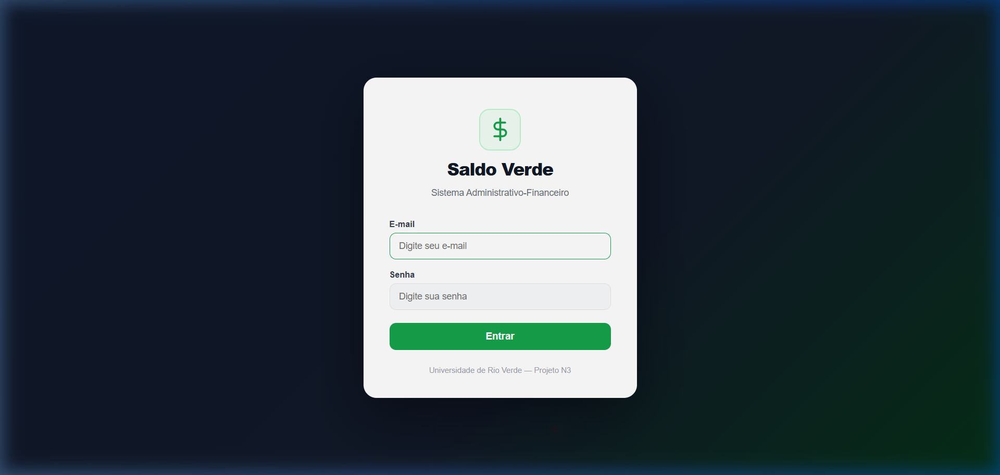
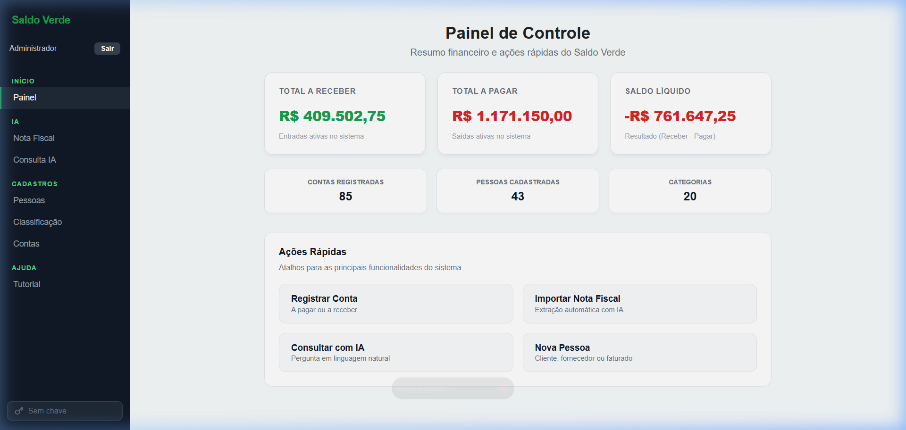
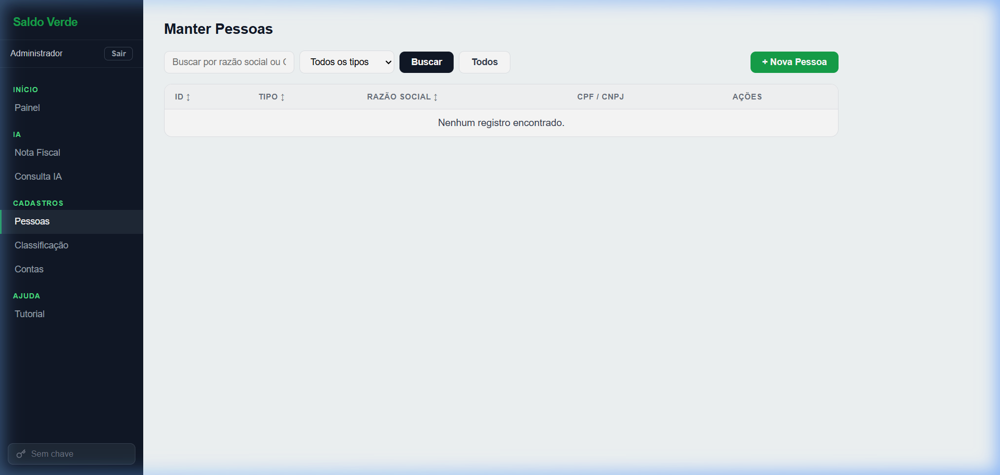
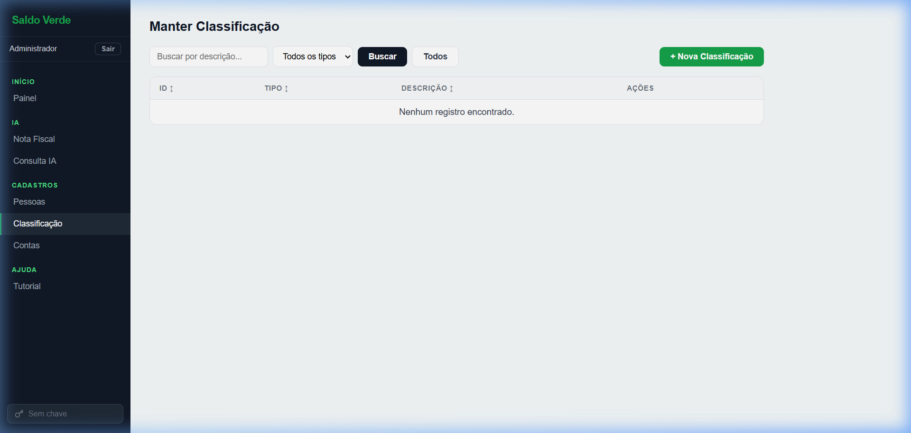
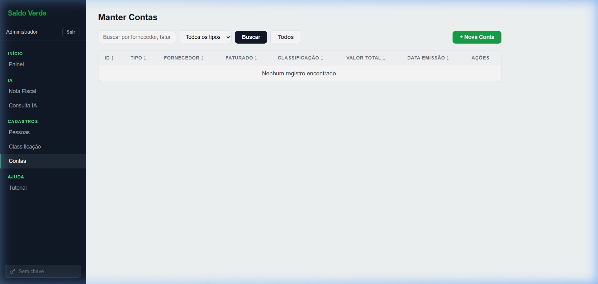
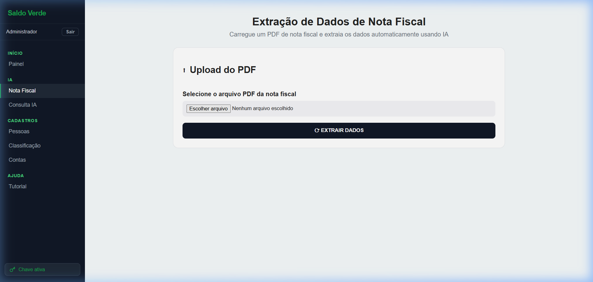
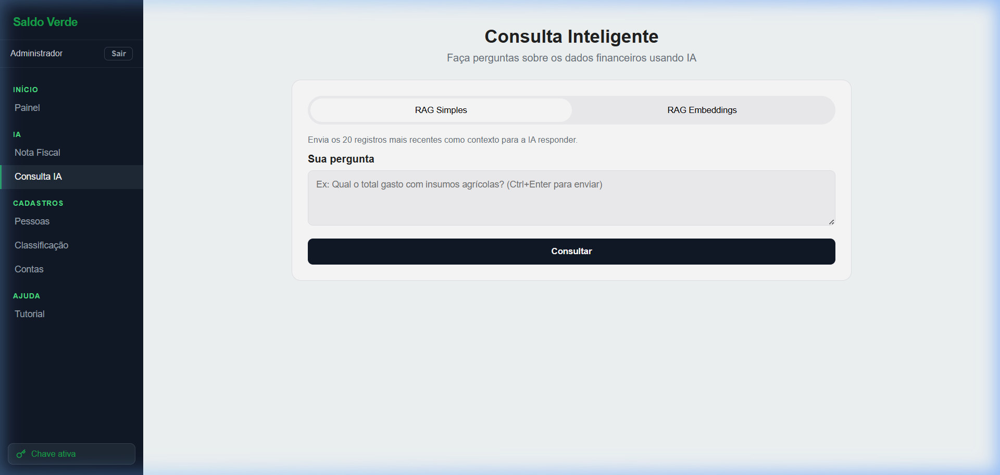

Sistema de Gestão Financeira Agrícola com Inteligência Artificial
O Saldo Verde é um sistema web de gestão financeira desenvolvido para o contexto do agronegócio. Ele permite o cadastro de pessoas (fornecedores, clientes e faturados), a classificação de despesas e receitas e o registro de contas a pagar e a receber com suporte a parcelamento.
Além do gerenciamento convencional, o sistema integra recursos de Inteligência Artificial que automatizam a extração de dados de notas fiscais em PDF e permitem consultas financeiras em linguagem natural.
Cadastre fornecedores, clientes e faturados com filtros, busca e ordenação por coluna.
Crie categorias personalizadas de despesa e receita para organizar as movimentações.
Registre contas a pagar e a receber com múltiplas parcelas e datas de vencimento.
Envie um PDF e a IA extrai fornecedor, valores e parcelas automaticamente.
Perguntas em linguagem natural respondidas com base nos dados financeiros cadastrados.
Guia passo a passo integrado à interface, acessível a qualquer momento pelo menu lateral.
| Camada | Tecnologia |
|---|---|
| Frontend | React 19 + Vite |
| Backend | Python 3.13 / Flask |
| Banco de Dados | PostgreSQL 17 |
| Inteligência Artificial | Google Gemini + FAISS (busca semântica) |
| Infraestrutura | Docker + Docker Compose |
| Hospedagem | Vercel (frontend) + Render (backend + banco) |
O sistema está disponível publicamente no endereço abaixo. Não é necessário instalar nada para acessar a versão em produção.
Utilize as credenciais fornecidas pelo responsável pelo sistema para entrar:

A interface é dividida em duas áreas principais:
| Área | Descrição |
|---|---|
| Barra lateral (sidebar) | Menu de navegação à esquerda com todos os módulos do sistema, nome do usuário logado e botão de saída. |
| Área de conteúdo | Painel central onde cada módulo é exibido ao ser selecionado no menu. |
| Seção | Item | Função |
|---|---|---|
| Início | Painel | Resumo financeiro e atalhos de ações rápidas |
| IA | Nota Fiscal | Upload de PDF para extração automática de dados |
| Consulta IA | Perguntas em linguagem natural sobre os dados | |
| Cadastros | Pessoas | Gerenciar fornecedores, clientes e faturados |
| Classificação | Gerenciar categorias de despesa e receita | |
| Contas | Registrar movimentações financeiras | |
| Ajuda | Tutorial | Abre o guia interativo do sistema |
Ao fazer login pela primeira vez, o tutorial abre automaticamente. Ele cobre todas as funcionalidades com 9 passos, destacando na tela o elemento sendo explicado. Para reabrir a qualquer momento, clique em Tutorial no menu lateral.
O Painel de Controle é a tela inicial do sistema após o login. Ele consolida os principais indicadores financeiros da fazenda e fornece atalhos de ações rápidas para otimizar as tarefas diárias.

Para facilitar a navegação, o painel inclui atalhos diretos:
O módulo Pessoas permite cadastrar todos os participantes das movimentações financeiras. Existem três tipos de pessoa:
| Tipo | Descrição |
|---|---|
| Fornecedor | Empresa ou pessoa que fornece produtos ou serviços à propriedade. |
| Cliente | Quem compra ou recebe os produtos da propriedade. |
| Faturado | Responsável pelo pagamento da nota fiscal (pode ser diferente do fornecedor). |

O módulo Classificação permite criar categorias para organizar as movimentações financeiras. Cada classificação pertence a um dos dois tipos:
| Tipo | Exemplos |
|---|---|
| Despesa | Insumos Agrícolas, Combustível, Mão de Obra, Manutenção |
| Receita | Venda de Grãos, Aluguel de Máquinas, Prestação de Serviços |

O módulo Contas é o núcleo financeiro do sistema. Aqui são registradas todas as movimentações, divididas em dois tipos:
| Tipo | Descrição |
|---|---|
| A Pagar | Despesas e pagamentos a fornecedores. |
| A Receber | Receitas e cobranças de clientes. |

Clique em qualquer linha da tabela de contas para abrir o painel de detalhes, que exibe todas as parcelas, datas de vencimento e o status de cada uma.
O módulo Nota Fiscal utiliza o Google Gemini para analisar arquivos PDF de notas fiscais e extrair automaticamente os dados relevantes, eliminando a necessidade de digitação manual.

| Campo | Descrição |
|---|---|
| Fornecedor | Nome do emitente da nota fiscal |
| Valor total | Valor total da nota |
| Número de parcelas | Quantidade de parcelas identificadas |
| Datas de vencimento | Vencimento de cada parcela |
| Descrição | Produto ou serviço descrito na nota |
O módulo Consulta IA permite fazer perguntas sobre os dados financeiros cadastrados usando linguagem natural, sem necessidade de conhecimento técnico ou SQL.

| Modo | Quando usar e Como funciona |
|---|---|
| RAG Simples |
Cálculos e Relatórios Financeiros: Recomendado para perguntas sobre somas, médias, totais de despesas ou receitas, e listagens organizadas por valores ou datas (ex: somas de gastos, maiores contas, datas de vencimento). Neste modo, o sistema realiza os cálculos matemáticos exatos no banco de dados e os entrega prontos para o assistente. Isso garante que os valores apresentados na resposta sejam 100% corretos e livres de erros de soma. |
| RAG Embeddings |
Busca por Assunto ou Significado: Recomendado para perguntas abertas ou qualitativas, especialmente quando você deseja encontrar uma informação mas não se lembra do nome exato do produto ou fornecedor (ex: "o que comprei para combater pragas?"). Neste modo, o assistente inteligente varre todo o seu histórico financeiro procurando registros que tenham relação com o significado das palavras da sua pergunta (mesmo usando sinônimos) e resume o resultado para você. |